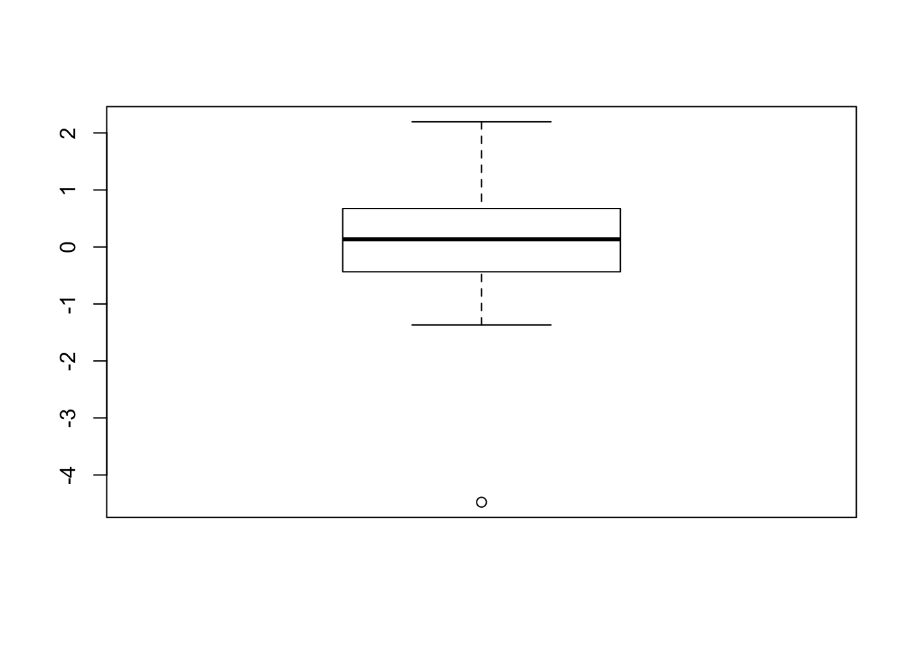
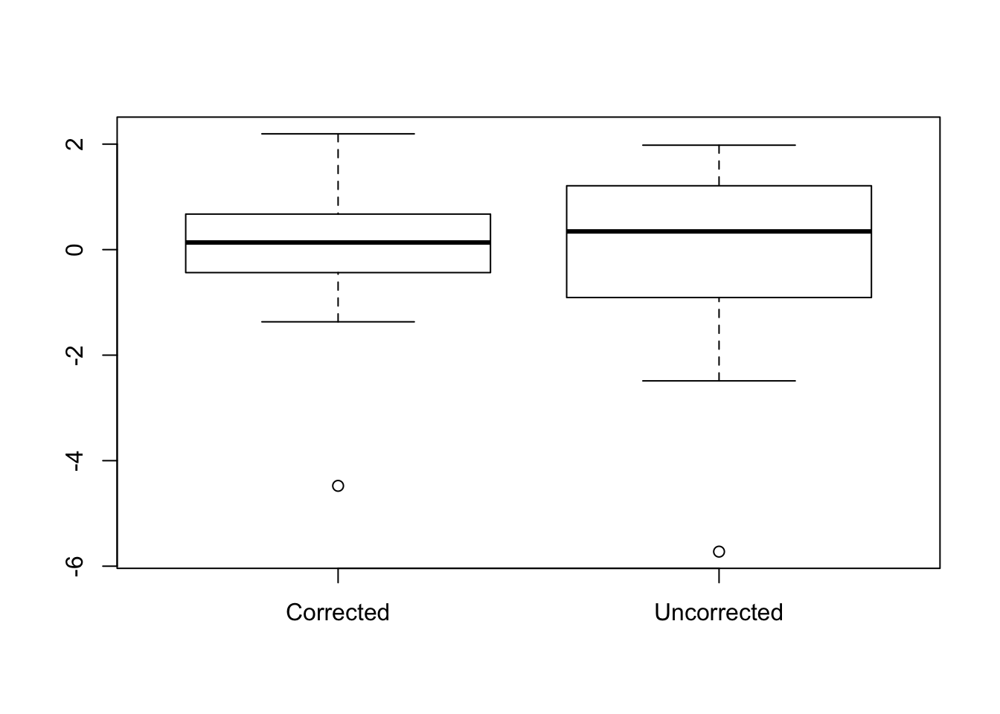
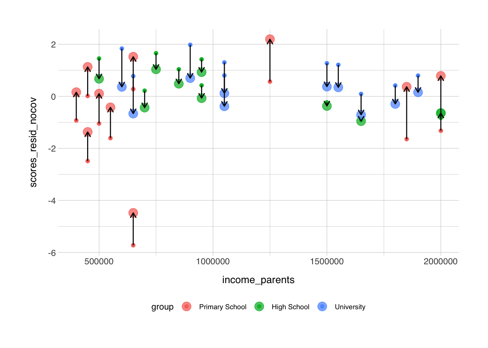

6 Basic Statistics
6.1 Hypotheses and the T-test
Let’s go back to the example with the history exam. We’ve had two groups of students take the same exam. A group of students from a primary school, and a group of students from a high school. Before we started the exam, we predicted that the high school students would score higher on average. That was our hypothesis. In hypothesis testing, as a rule there’s always two hypothesis, the null-hypothesis and the alternative hypothesis. The alternative hypothesis (also referred to as Ha) is the statement we just made: “high school students score on average higher on this test than primary school students”. The null hypothesis (or H0) is defined as the negation of the alternative hypothesis. In this case the null hypothesis is something like “the high school students do not score higher on average than the primary school students”, or “there is no difference in the average score between the primary school stundents and the high school students”.
We can test whether this hypothesis is true with a statistical test. How exciting! The most appropriate test here is a T-test. We choose a T-test here because we have two groups that we want to compare, and the data in each group is a set of numbers. The function in R to perform a T-test is aptly named t.test(). This function takes either one or two sets of data. If you supply only one set of data, then the function compares that data to a normal distribution centered around 0. The T-test is only reliable when the data is normally distributed, but we showed earlier that this was the case, so we can move on and perform the test.
There are a few options that we can set in the t.test() function. Since our hypothesis stated that we exptect primary school students to score on average lower than the high school students, we don’t use a two-tailed test, but rather a one-tailed test. We can set this in the alternative field.
##
## Welch Two Sample t-test
##
## data: data$scores and data_highschool$scores
## t = -1.6868, df = 4.3495, p-value = 0.08058
## alternative hypothesis: true difference in means is less than 0
## 95 percent confidence interval:
## -Inf 0.4940209
## sample estimates:
## mean of x mean of y
## 6.6 8.7There’s a few more options that we can set, and I’ll quickly go over them below, R has default settings for a number of these options, so it’s not always necessary to set these explicitely.
t.test(data$scores, data_highschool$scores, # The two sets of data to compare
alternative = "less", # Other options are "two.sided" or "greater"
mu = 0, # Relevant if we supplied only one set of values, otherwise
# this sets the mean value for the perfect normal distribution
paired = FALSE, # Is this a paired T-test? Alternative input: TRUE
var.equal = FALSE, # Can equal variance be assumed? Alternative: TRUE
conf.level = 0.95) # Confidence level##
## Welch Two Sample t-test
##
## data: data$scores and data_highschool$scores
## t = -1.6868, df = 4.3495, p-value = 0.08058
## alternative hypothesis: true difference in means is less than 0
## 95 percent confidence interval:
## -Inf 0.4940209
## sample estimates:
## mean of x mean of y
## 6.6 8.7Here we find that there is no significant difference in the scores between primary school and high school students. This is somewhat surprising, since the values are very different. The reason we didn’t get a significant result here is likely because both groups contained only five students, and this is very low for a statistical test. We should definitely include more participants. Ideally, we would perform a power analysis before we even started the experiment, but we’ll get to that later.
So let’s just for the sake of argument, say that we tested 10 students in each group, what would it look like then. The new datasets are as follow:
data <- data.frame(
names = c("Lucas", "Linn", "Thomas", "Sara", "Anna", "Hassan", "Ingvild", "Jostein", "Yuri", "Olav"),
scores = c(7.5, 8, 2, 6.5, 9, 5, 6, 8, 6.5, 7.5)
)
data_highschool <- data.frame(
names = c("Alex", "Solveig", "Ivar", "Yasmin", "Tobbe", "Christine", "Johannes", "Mo", "Trude", "Trygve"),
scores = c(8.5, 9, 8.5, 9.5, 8, 8.5, 9, 8.5, 9.5, 8)
)## names scores
## 1 Lucas 7.5
## 2 Linn 8.0
## 3 Thomas 2.0
## 4 Sara 6.5
## 5 Anna 9.0
## 6 Hassan 5.0
## 7 Ingvild 6.0
## 8 Jostein 8.0
## 9 Yuri 6.5
## 10 Olav 7.5## names scores
## 1 Alex 8.5
## 2 Solveig 9.0
## 3 Ivar 8.5
## 4 Yasmin 9.5
## 5 Tobbe 8.0
## 6 Christine 8.5
## 7 Johannes 9.0
## 8 Mo 8.5
## 9 Trude 9.5
## 10 Trygve 8.0You rerun the same code we used earlier to see if the mean score is still the same for both groups, how much the standard deviation has changed, and whether the data is still roughly normally distributed. If we run the same code for the t-test again now, we get a whole different result:
##
## Welch Two Sample t-test
##
## data: data$scores and data_highschool$scores
## t = -3.2318, df = 10.315, p-value = 0.004325
## alternative hypothesis: true difference in means is less than 0
## 95 percent confidence interval:
## -Inf -0.9259259
## sample estimates:
## mean of x mean of y
## 6.6 8.7Again, this is just for educational purpose now. In a real scientific setting, you would determine the number of experiments you need to perform up front and report that before you start experimenting. It is generally considered bad practice to keep testing and testing until you get the result you wanted all along.
Back to the result, the ouput from the t.test() function is pretty self-explanatory. For this example, we accept a p-value lower than 0.05 as a significant result. Make sure to also look at the t-statistic and the degrees of freedom.
6.2 ANOVA
Let’s say you design a new experiment, and now you also add a third group of students, all university students in the first year of their bachelor in history. Try running the same tests again for this group. You’ll find that this set of data is still rougly normally distributed and the mean score lies higher than the other two groups. Their results look like this:
data_university <- data.frame(
names = c("Johnny", "Synne", "Petter", "Yusuf", "Christy", "Olek", "Abdullah", "Jan", "Emilie", "Roger"),
scores = c(9, 9.5, 10, 10, 9, 9.5, 9.5, 10, 10, 8.5)
)## names scores
## 1 Johnny 9.0
## 2 Synne 9.5
## 3 Petter 10.0
## 4 Yusuf 10.0
## 5 Christy 9.0
## 6 Olek 9.5
## 7 Abdullah 9.5
## 8 Jan 10.0
## 9 Emilie 10.0
## 10 Roger 8.5Since we now have three data frames to work with, it starts to become a little messy, that’s why I combined all three data frames into one, and added a column specifying the group each individual student belonged to:
data$group <- "Primary School"
data_highschool$group <- "High School"
data_university$group <- "University"
data_comb <- rbind(data, data_highschool, data_university) %>%
mutate(group = factor(group, levels = c("Primary School", "High School", "University")))
print(data_comb)## names scores group
## 1 Lucas 7.5 Primary School
## 2 Linn 8.0 Primary School
## 3 Thomas 2.0 Primary School
## 4 Sara 6.5 Primary School
## 5 Anna 9.0 Primary School
## 6 Hassan 5.0 Primary School
## 7 Ingvild 6.0 Primary School
## 8 Jostein 8.0 Primary School
## 9 Yuri 6.5 Primary School
## 10 Olav 7.5 Primary School
## 11 Alex 8.5 High School
## 12 Solveig 9.0 High School
## 13 Ivar 8.5 High School
## 14 Yasmin 9.5 High School
## 15 Tobbe 8.0 High School
## 16 Christine 8.5 High School
## 17 Johannes 9.0 High School
## 18 Mo 8.5 High School
## 19 Trude 9.5 High School
## 20 Trygve 8.0 High School
## 21 Johnny 9.0 University
## 22 Synne 9.5 University
## 23 Petter 10.0 University
## 24 Yusuf 10.0 University
## 25 Christy 9.0 University
## 26 Olek 9.5 University
## 27 Abdullah 9.5 University
## 28 Jan 10.0 University
## 29 Emilie 10.0 University
## 30 Roger 8.5 UniversityIf we now want to test whether there is a difference in scores between the three groups, we cannot use a T-test anymore. To compare the mean value of multiple groups, we use an Analysis of Variance, better known as an ANOVA. Performing an ANOVA in R is twice as complicated as a T-test in that running an ANOVA takes two lines of code instead of one. First we need to set up the model that we want to test with possible covariates (which we don’t have at the moment). The function for setting up the ANOVA formula is aov().
Then we can run the actual ANOVA command, which is called anova(). This function takes the model and runs the ANOVA statical test. It prints again a list of pretty straight-forward output. In most cases, you’re just interested in the line with the grouping variable, we can ignore the row with “Residuals” for now.
## Analysis of Variance Table
##
## Response: scores
## Df Sum Sq Mean Sq F value Pr(>F)
## group 2 44.867 22.433 14.956 4.249e-05 ***
## Residuals 27 40.500 1.500
## ---
## Signif. codes: 0 '***' 0.001 '**' 0.01 '*' 0.05 '.' 0.1 ' ' 1We find that there is a significant effect of the grouping variable on the score. And the effect size (denoted by the F-value) is high too. Success! But the output we now have is the bare minimum we need to report in articles etc., but we can do better. Remember the T-test we ran earlier? That was a comparison between primary school students and high school students, but now that we have three groups we can make two more comparisons, [High School-Universtity], and [Primary School-University]. You could do this with independent T-tests, but it’s important to remember that we then effectively run 3 T-tests within the same dataset. A T-test is appropriate when you have independent groups, but when we run this three-way T-test, the tests are not really independent anymore, since each group will appear twice in each comparison. And it’s very imporant that we take this into account. So what do we do when we want to run T-tests within a comparison of three groups to see what drives the effect we observed when we ran the ANOVA? There’s a function called the pairwise.t.test(), which does exactly what we decribed above, but it’s not what we want in this case. What we do want is to run a post-hoc test!
Again, this is just a simple single line of code. There’s multiple options for post-hoc available in R, but we use the most common one is the Tukey’s Honest Significant Differences test, commonly known as Tukey’s post-hoc test. Tukey’s post-hoc test is only relevant when you want to run pairwise T-tests on all possible combinations of groups, as we do here. The function for this in R is TukeyHSD(). It requires only the ANOVA model we created earlier using the aov() function. Since there’s now three groups in the statistical test, we cannot specify whether we want a one-tailed or two-tailed test. So for comparison, let’s run the T-test again for the comparison between primary school and high school students, but let it be a two-tailed test this time. Let’s do it:
##
## Welch Two Sample t-test
##
## data: data$scores and data_highschool$scores
## t = -3.2318, df = 10.315, p-value = 0.00865
## alternative hypothesis: true difference in means is not equal to 0
## 95 percent confidence interval:
## -3.5418444 -0.6581556
## sample estimates:
## mean of x mean of y
## 6.6 8.7Now that we have that for comparison, let’s now run Tukey’s post-hoc test:
## Tukey multiple comparisons of means
## 95% family-wise confidence level
##
## Fit: aov(formula = scores ~ group, data = data_comb)
##
## $group
## diff lwr upr p adj
## High School-Primary School 2.1 0.741967 3.458033 0.0019198
## University-Primary School 2.9 1.541967 4.258033 0.0000401
## University-High School 0.8 -0.558033 2.158033 0.3252891The ouput from this is relatively simple, it shows the output from the pairwise tests it performed, with the mean difference, the upper and lower bounds, and the adjusted p-value. Note that the p-value for the comparison between primary school students and high school students is higher in the post-hoc test than in the T-test. This is because the post-hoc test automatically corrects for multiple testing. I’ll dedicate an entire section to the multiple testing problem and why it’s important, and why it’s one of the most severe errors made in statistics. Unfortunately, it’s also a very common mistake.
Be also aware that there’s different ways of going about calculating ANOVA. In order to perform the calculation, one needs to calculate a parameter called the “sum of squares”. There’s three different ways of calculating the sum of squares, Type I, Type II, and Type III. We might go more in-depth later on what the difference in between these, but the important part here is that one might get different results based on the type used and SPSS and R have different default settings on how to calculate it. So if you’re trying to compare your results from SPSS with the results from R, then you might get different results. So be aware! If you want to use Type III sum of squares in R, you can run the ANOVA implementation in the {afex} package. If your data is normally distributed and the factors are orthogonal, then the three types will give the same result, but if not, then keep this in mind!
6.3 Correlation
Now for the last statistical test that is quite common in clinical research, the correlation. Let’s say we take the same dataset, and we also gathered data on the parent’s income. Then we can see how the parents income affect their children’s performance in school. While this may not have a direct effect, wealthy parents might be more able to afford tutoring, and wealthy parents are more likely to live in nice neighbourhoods and provide a good situation for the child to do homework. This means that income might be a proxy for other factors. Let’s say the new data looks like this:
## [1] 1850000 650000 650000 400000 1250000 450000 550000 2000000 500000 450000
## [11] 950000 500000 1500000 950000 1650000 2000000 850000 2000000 750000 700000
## [21] 1650000 600000 1550000 1500000 1050000 1050000 1800000 900000 1900000 650000So now we can run a correlation. The simplest way to do this is by using the cor.test() function. It behaves the same was as the t.test() function, but now it takes two continuous variables as input. Now we use a two-sided hypothesis, and want to use Spearman’s Rank test, which is set in the method option in the cor.test() function. Let’s do it:
## Warning in cor.test.default(data_comb$scores, data_comb$income_parents, : Cannot compute
## exact p-value with ties##
## Spearman's rank correlation rho
##
## data: data_comb$scores and data_comb$income_parents
## S = 2745.3, p-value = 0.03349
## alternative hypothesis: true rho is not equal to 0
## sample estimates:
## rho
## 0.3892626So we can see that there is an effect of parent’s income on test scores, and it’s significant too. But we’ve overlooked one big thing, that the students in the dataset that scored the highest were the university students, and it is probable that there might be a bias in the dataset since university students are maybe more likely have wealthy parents, than primary school students or high school students. We want to correct for this. Instead of manually running the test three times, I would recommend to “regress out” the group variable from the scores. We do this by running a linear model with the group as the covariate to regress out and the look at the residual scores. We can “residualize” the data as it’s called by using the lm() function. The input for this is similar to that of the aov() option. Just to compare I will run it twice, once correcting for group, and once without covariate.
lm_model_nocov <- lm(scores ~ income_parents, data = data_comb)
lm_model <- lm(scores ~ income_parents + group, data = data_comb)
data_comb$scores_resid_nocov <- lm_model_nocov$residuals
data_comb$scores_resid <- lm_model$residualsThe mean of a residualized variable is by definition 0, but doesn’t have to be normally distributed. In our case here, both residualized variables aren’t actually normally distributed since outliers in the regular data will be outliers in the residualized data too. Let’s check the boxplot:

So now that we’ve “regressed out” the grouping variable, we now have a cleaner set of data to estimate the effect of parental income on test scores with. Let’s do it using the same method we used before:
## Warning in cor.test.default(data_comb$scores_resid, data_comb$income_parents, : Cannot
## compute exact p-value with ties##
## Spearman's rank correlation rho
##
## data: data_comb$scores_resid and data_comb$income_parents
## S = 4956.8, p-value = 0.5891
## alternative hypothesis: true rho is not equal to 0
## sample estimates:
## rho
## -0.1027299That’s very interesting, it seems that when not correcting for the student’s current educiaton level, there is a significant correlation between income and the student’s test scores, but when you correct for the group the students were in, this relationship disappears. It seems that the grouping variable was driving the assocation in this case.
Let’s have another look at the residuals. When we regressed out the grouping variable, I also did it once without correcting for the group. I just wanted to show the difference between the two to illustrate the effect that regressing categorical variables has on the data. Hopefully I’ll convince you to correct for variables often and early in the process. Let’s compare the distributions of both the corrected and uncorrected data.
boxplot(data_comb$scores_resid, data_comb$scores_resid_nocov, names = c("Corrected", "Uncorrected"))
The difference is subtle, but you can see that the first boxplot has a narrower confidence interval and smaller error bars. So both boxplots contain data from the same observation, so we can also see how the data points change for each group when we take the uncorrected residualized data and the corrected residualized data. Let’s plot it like a scatter plot and plot the income of the parents on the x-axis, and the residualized scores on the y-axis. The small dots indicate the uncorrected data, and the larger dots indicate the data corrected for group.

You can see that the adjustment direction is consistent across the three groups, but the size of the adjustment varies across individuals. You may also notice that the data points on the left side of the plot are mostly primary school children, while the other two groups are more distributed across the x-axis. Let’s do the statistics again.
## Warning in cor.test.default(data_comb$income_parents, data_comb$scores_resid, : Cannot
## compute exact p-value with ties##
## Spearman's rank correlation rho
##
## data: data_comb$income_parents and data_comb$scores_resid
## S = 4956.8, p-value = 0.5891
## alternative hypothesis: true rho is not equal to 0
## sample estimates:
## rho
## -0.1027299Right! So now the significant effect has dissappeared, just because we regressed out the education levels from the scores. Another way of getting to this conclusion is to look at the raw output from the lm() model. Here again the summary() function comes in useful. Remember we saved the output from the lm() function in a variable called lm_model, we can use that now to look at what the linear model said about the predictor of scores.
##
## Call:
## lm(formula = scores ~ income_parents + group, data = data_comb)
##
## Residuals:
## Min 1Q Median 3Q Max
## -4.4772 -0.4321 0.1354 0.6261 2.1954
##
## Coefficients:
## Estimate Std. Error t value Pr(>|t|)
## (Intercept) 6.122e+00 5.343e-01 11.458 1.16e-11 ***
## income_parents 5.457e-07 4.261e-07 1.281 0.21154
## groupHigh School 1.931e+00 5.572e-01 3.465 0.00185 **
## groupUniversity 2.687e+00 5.663e-01 4.745 6.58e-05 ***
## ---
## Signif. codes: 0 '***' 0.001 '**' 0.01 '*' 0.05 '.' 0.1 ' ' 1
##
## Residual standard error: 1.21 on 26 degrees of freedom
## Multiple R-squared: 0.5537, Adjusted R-squared: 0.5022
## F-statistic: 10.75 on 3 and 26 DF, p-value: 8.913e-05While there is a significant effect of group (which we already knew from the ANOVA we ran earlier), we can see that the income from the parents is not a significant predictor of test scores in this dataset. At this point you might go, “wait, why does this regression model also tell us stuff the ANOVA told us?”. The short answer is that any ANOVA is at it’s core basically a linear model, why and how that works is somewhat technical and complicated, and I won’t go into it now. For most practical purposes, you may continue using ANOVAs and regression models as if they’re two separate things entirely. Even if it was just because post-hoc tests are built around the structure of an ANOVA, and not linear models.
Okay, now that we’ve covered some of the most common statistical tests in clinical research, I think it’s important to talk about p-values, and why some of the nice p-values lower than 0.05 we found earlier are pretty useless for most purposes.